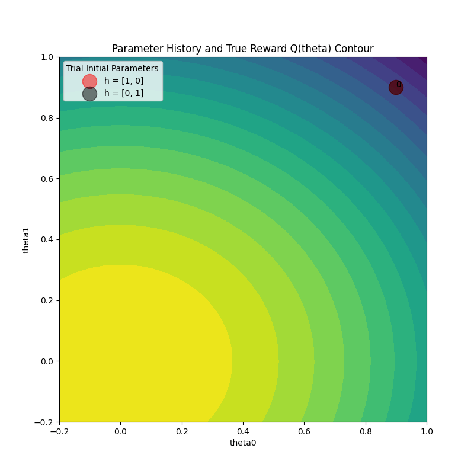
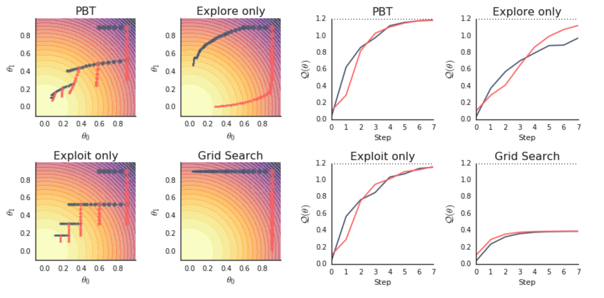
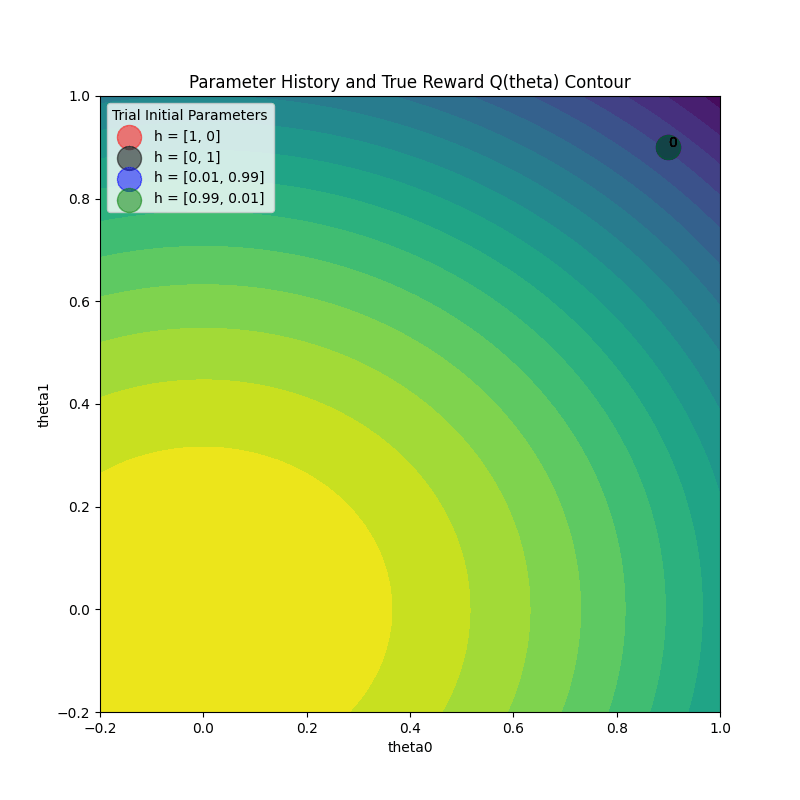

Visualizing Population Based Training (PBT) Hyperparameter Optimization#
Assumptions: The reader has a basic understanding of the PBT algorithm and wants to dive deeper and verify the underlying algorithm behavior with Ray’s PBT implementation. This guide provides resources for gaining some context.
Population Based Training (PBT) is a powerful technique that combines parallel search with sequential optimization to efficiently find optimal hyperparameters. Unlike traditional hyperparameter tuning methods, PBT dynamically adjusts hyperparameters during training by having multiple training runs (“trials”) that evolve together, periodically replacing poorly performing configurations with perturbations of better ones.
This tutorial will go through a simple example that will help you develop a better understanding of what PBT is doing under the hood when using it to tune your algorithms.
We will learn how to:
Set up checkpointing and loading for PBT with the function trainable interface
Configure Tune and PBT scheduler parameters
Visualize PBT algorithm behavior to gain some intuition
Set up Toy the Example#
The toy example optimization problem we will use comes from the PBT paper (see Figure 2 for more details). The goal is to find parameters that maximize an quadratic function, while only having access to an estimator that depends on a set of hyperparameters. A practical example of this is maximizing the (unknown) generalization capabilities of a model across all possible inputs with only access to the empirical loss of your model, which depends on hyperparameters in order to optimize.
We’ll start with some imports.
!pip install -q -U "ray[tune]" matplotlib
Note: this tutorial imports functions from this helper file named pbt_visualization_utils.py. These define plotting functions for the PBT training progress.
import numpy as np
import matplotlib.pyplot as plt
import os
import pickle
import tempfile
import ray
from ray import tune
from ray.tune.schedulers import PopulationBasedTraining
from ray.tune.tune_config import TuneConfig
from ray.tune.tuner import Tuner
from pbt_visualization_utils import (
get_init_theta,
plot_parameter_history,
plot_Q_history,
make_animation,
)
Show code cell output
2025-02-24 16:21:26,622 INFO util.py:154 -- Missing packages: ['ipywidgets']. Run `pip install -U ipywidgets`, then restart the notebook server for rich notebook output.
2025-02-24 16:21:26,890 INFO util.py:154 -- Missing packages: ['ipywidgets']. Run `pip install -U ipywidgets`, then restart the notebook server for rich notebook output.
Concretely, we will use the definitions (with very minor modifications) provided in the paper for the function we are trying to optimize, and the estimator we are given.
Our goal is to maximize a quadratic function Q, but we only have access to a biased estimator Qhat that depends on hyperparameters. This simulates real-world scenarios where we want to optimize for true generalization performance but can only measure training performance, which is influenced by hyperparameters.
Here is a list of the concepts we will use for the example, and what they might be analagous to in practice:
Symbol |
In This Example |
Real-World Analogy |
|---|---|---|
|
Model parameters, updated in each training step. |
Neural network parameters |
|
The hyperparameters optimized by PBT. |
Learning rate, batch size, etc. |
|
True reward function we want to optimize, but is not directly use for training. |
True generalization– an theoretical and unobersvable in practice. |
|
Estimated reward function we actually optimize against; depends on the hyperparameters as well as the model parameters. |
Empirical reward in training. |
|
Gradient of the estimated reward function, used to update model parameters |
Gradient descent step in training |
Below are the implementations in code.
def Q(theta):
# equation for an elliptic paraboloid with a center at (0, 0, 1.2)
return 1.2 - (3 / 4 * theta[0] ** 2 + theta[1] ** 2)
def Qhat(theta, h):
return 1.2 - (h[0] * theta[0] ** 2 + h[1] * theta[1] ** 2)
def grad_Qhat(theta, h):
theta_grad = -2 * h * theta
theta_grad[0] *= 3 / 4
h_grad = -np.square(theta)
h_grad[0] *= 3 / 4
return {"theta": theta_grad, "h": h_grad}
theta_0 = get_init_theta()
print(f"Initial parameter values: theta = {theta_0}")
Initial parameter values: theta = [0.9 0.9]
Defining the Function Trainable#
We will define the training loop:
Load the hyperparameter configuration
Initialize the model, resuming from a checkpoint if one exists (this is important for PBT, since the scheduler will pause and resume trials frequently when trials get exploited).
Run the training loop and checkpoint.
def train_func(config):
# Load the hyperparam config passed in by the Tuner
h0 = config.get("h0")
h1 = config.get("h1")
h = np.array([h0, h1]).astype(float)
lr = config.get("lr")
train_step = 1
checkpoint_interval = config.get("checkpoint_interval", 1)
# Initialize the model parameters
theta = get_init_theta()
# Load a checkpoint if it exists
# This checkpoint could be a trial's own checkpoint to resume,
# or another trial's checkpoint placed by PBT that we will exploit
checkpoint = tune.get_checkpoint()
if checkpoint:
with checkpoint.as_directory() as checkpoint_dir:
with open(os.path.join(checkpoint_dir, "checkpoint.pkl"), "rb") as f:
checkpoint_dict = pickle.load(f)
# Load in model (theta)
theta = checkpoint_dict["theta"]
last_step = checkpoint_dict["train_step"]
train_step = last_step + 1
# Main training loop (trial stopping is configured later)
while True:
# Perform gradient ascent steps
param_grads = grad_Qhat(theta, h)
theta_grad = np.asarray(param_grads["theta"])
theta = theta + lr * theta_grad
# Define which custom metrics we want in our trial result
result = {
"Q": Q(theta),
"theta0": theta[0],
"theta1": theta[1],
"h0": h0,
"h1": h1,
"train_step": train_step,
}
# Checkpoint every `checkpoint_interval` steps
should_checkpoint = train_step % checkpoint_interval == 0
with tempfile.TemporaryDirectory() as temp_checkpoint_dir:
checkpoint = None
if should_checkpoint:
checkpoint_dict = {
"h": h,
"train_step": train_step,
"theta": theta,
}
with open(
os.path.join(temp_checkpoint_dir, "checkpoint.pkl"), "wb"
) as f:
pickle.dump(checkpoint_dict, f)
checkpoint = tune.Checkpoint.from_directory(temp_checkpoint_dir)
# Report metric for this training iteration, and include the
# trial checkpoint that contains the current parameters if we
# saved it this train step
tune.report(result, checkpoint=checkpoint)
train_step += 1
Note
Since PBT will keep restoring from latest checkpoints, it’s important to save and load train_step correctly in a function trainable. Make sure you increment the loaded train_step by one as shown above in checkpoint_dict. This avoids repeating an iteration and causing the checkpoint and perturbation intervals to be out of sync.
Configure PBT and Tuner#
We start by initializing ray (shutting it down if a session existed previously).
if ray.is_initialized():
ray.shutdown()
ray.init()
2025-02-24 16:21:27,556 INFO worker.py:1841 -- Started a local Ray instance.
| Python version: | 3.11.11 |
| Ray version: | 2.42.1 |
Create the PBT scheduler#
perturbation_interval = 4
pbt_scheduler = PopulationBasedTraining(
time_attr="training_iteration",
perturbation_interval=perturbation_interval,
metric="Q",
mode="max",
quantile_fraction=0.5,
resample_probability=0.5,
hyperparam_mutations={
"lr": tune.qloguniform(5e-3, 1e-1, 5e-4),
"h0": tune.uniform(0.0, 1.0),
"h1": tune.uniform(0.0, 1.0),
},
synch=True,
)
A few notes on the PBT config:
time_attr="training_iteration"in combination withperturbation_interval=4will decide whether a trial should continue or exploit a different trial every 4 training iterations.metric="Q"andmode="max"specify how trial performance is ranked. In this case, the high performing trials are the top 50% of trials (set byquantile_fraction=0.5) that report the highestQmetrics. Note that we could have set the metric/mode inTuneConfiginstead.hyperparam_mutationsspecifies that the learning ratelrand additional hyperparametersh0,h1should be perturbed by PBT and defines the resample distribution for each hyperparameter (whereresample_probability=0.5means that resampling and mutation both happen with 50% probability).synch=Truemeans that PBT will run synchronously, which slows down the algorithm by introducing waits, but it produces more understandable visualizations for the purposes of this tutorial.In synchronous PBT, we wait until all trials reach the next
perturbation_intervalto decide which trials should continue and which trials should pause and start from the checkpoint of another trials. In the case of 2 trials, this means that everyperturbation_intervalwill result in the worse performing trial exploiting the better performing trial.This is not always the case in asynchronous PBT, since trials report results and decide whether to continue or exploit one by one. This means that a trial could decide that it is a top-performer and decide to continue, since other trials haven’t had the chance to report their better results yet. Therefore, we do not always see trials exploiting on every
perturbation_interval.
Create the Tuner#
tuner = Tuner(
train_func,
param_space={
"lr": 0.05,
"h0": tune.grid_search([0.0, 1.0]),
"h1": tune.sample_from(lambda spec: 1.0 - spec.config["h0"]),
"num_training_iterations": 100,
# Match `checkpoint_interval` with `perturbation_interval`
"checkpoint_interval": perturbation_interval,
},
tune_config=TuneConfig(
num_samples=1,
# Set the PBT scheduler in this config
scheduler=pbt_scheduler,
),
run_config=tune.RunConfig(
stop={"training_iteration": 100},
failure_config=tune.FailureConfig(max_failures=3),
),
)
Note
We recommend matching checkpoint_interval with perturbation_interval from the PBT config.
This ensures that the PBT algorithm actually exploits the trials in the most recent iteration.
If your perturbation_interval is large and want to checkpoint more frequently, set perturbation_interval to be a multiple of checkpoint_interval.
A few other notes on the Tuner config:
param_spacespecifies the initialconfiginput to our training function. Agrid_searchover two values will launch two trials with a certain set of hyperparameters, and PBT will continue modifying them as training progresses.The initial hyperparam settings for
h0andh1are configured so that two trials will spawn, one withh = [1, 0]and the other withh = [0, 1]. This matches the paper experiment and will be used to compare against agrid_searchbaseline that removes the PBT scheduler.
Run the experiment#
We launch the trials by calling Tuner.fit.
pbt_results = tuner.fit()
Show code cell output
Tune Status
| Current time: | 2025-02-24 16:22:07 |
| Running for: | 00:00:39.86 |
| Memory: | 21.5/36.0 GiB |
System Info
PopulationBasedTraining: 24 checkpoints, 24 perturbsLogical resource usage: 1.0/12 CPUs, 0/0 GPUs
Trial Status
| Trial name | status | loc | h0 | iter | total time (s) | Q | theta0 | theta1 |
|---|---|---|---|---|---|---|---|---|
| train_func_74757_00000 | TERMINATED | 127.0.0.1:23555 | 0.89156 | 100 | 0.0432718 | 1.19993 | 0.00573655 | 0.00685687 |
| train_func_74757_00001 | TERMINATED | 127.0.0.1:23556 | 1.11445 | 100 | 0.0430496 | 1.19995 | 0.0038124 | 0.00615009 |
2025-02-24 16:21:28,081 WARNING sample.py:469 -- sample_from functions that take a spec dict are deprecated. Please update your function to work with the config dict directly.
2025-02-24 16:21:28,082 WARNING sample.py:469 -- sample_from functions that take a spec dict are deprecated. Please update your function to work with the config dict directly.
2025-02-24 16:21:29,018 INFO pbt.py:878 --
[PopulationBasedTraining] [Exploit] Cloning trial 74757_00000 (score = 0.243822) into trial 74757_00001 (score = 0.064403)
2025-02-24 16:21:29,018 INFO pbt.py:905 --
[PopulationBasedTraining] [Explore] Perturbed the hyperparameter config of trial74757_00001:
lr : 0.05 --- (resample) --> 0.017
h0 : 0.0 --- (* 1.2) --> 0.0
h1 : 1.0 --- (resample) --> 0.2659170728716209
2025-02-24 16:21:29,795 WARNING logger.py:186 -- Remote file not found: /Users/rdecal/ray_results/train_func_2025-02-24_16-21-28/train_func_74757_00000_0_h0=0.0000_2025-02-24_16-21-28/result.json
2025-02-24 16:21:30,572 WARNING logger.py:186 -- Remote file not found: /Users/rdecal/ray_results/train_func_2025-02-24_16-21-28/train_func_74757_00001_1_h0=1.0000_2025-02-24_16-21-28/result.json
2025-02-24 16:21:30,579 INFO pbt.py:878 --
[PopulationBasedTraining] [Exploit] Cloning trial 74757_00000 (score = 0.442405) into trial 74757_00001 (score = 0.268257)
2025-02-24 16:21:30,579 INFO pbt.py:905 --
[PopulationBasedTraining] [Explore] Perturbed the hyperparameter config of trial74757_00001:
lr : 0.05 --- (resample) --> 0.0345
h0 : 0.0 --- (resample) --> 0.9170235381005166
h1 : 1.0 --- (resample) --> 0.6256279739131234
2025-02-24 16:21:31,351 WARNING logger.py:186 -- Remote file not found: /Users/rdecal/ray_results/train_func_2025-02-24_16-21-28/train_func_74757_00000_0_h0=0.0000_2025-02-24_16-21-28/result.json
2025-02-24 16:21:32,127 WARNING logger.py:186 -- Remote file not found: /Users/rdecal/ray_results/train_func_2025-02-24_16-21-28/train_func_74757_00001_1_h0=1.0000_2025-02-24_16-21-28/result.json
2025-02-24 16:21:32,134 INFO pbt.py:878 --
[PopulationBasedTraining] [Exploit] Cloning trial 74757_00001 (score = 0.682806) into trial 74757_00000 (score = 0.527889)
2025-02-24 16:21:32,134 INFO pbt.py:905 --
[PopulationBasedTraining] [Explore] Perturbed the hyperparameter config of trial74757_00000:
lr : 0.0345 --- (resample) --> 0.0305
h0 : 0.9170235381005166 --- (* 1.2) --> 1.1004282457206198
h1 : 0.6256279739131234 --- (resample) --> 0.027475735413096558
2025-02-24 16:21:32,921 WARNING logger.py:186 -- Remote file not found: /Users/rdecal/ray_results/train_func_2025-02-24_16-21-28/train_func_74757_00000_0_h0=0.0000_2025-02-24_16-21-28/result.json
2025-02-24 16:21:33,706 WARNING logger.py:186 -- Remote file not found: /Users/rdecal/ray_results/train_func_2025-02-24_16-21-28/train_func_74757_00001_1_h0=1.0000_2025-02-24_16-21-28/result.json
2025-02-24 16:21:33,713 INFO pbt.py:878 --
[PopulationBasedTraining] [Exploit] Cloning trial 74757_00001 (score = 0.846848) into trial 74757_00000 (score = 0.823588)
2025-02-24 16:21:33,713 INFO pbt.py:905 --
[PopulationBasedTraining] [Explore] Perturbed the hyperparameter config of trial74757_00000:
lr : 0.0345 --- (* 0.8) --> 0.027600000000000003
h0 : 0.9170235381005166 --- (* 1.2) --> 1.1004282457206198
h1 : 0.6256279739131234 --- (resample) --> 0.7558831532799641
2025-02-24 16:21:34,498 WARNING logger.py:186 -- Remote file not found: /Users/rdecal/ray_results/train_func_2025-02-24_16-21-28/train_func_74757_00000_0_h0=0.0000_2025-02-24_16-21-28/result.json
2025-02-24 16:21:35,346 WARNING logger.py:186 -- Remote file not found: /Users/rdecal/ray_results/train_func_2025-02-24_16-21-28/train_func_74757_00001_1_h0=1.0000_2025-02-24_16-21-28/result.json
2025-02-24 16:21:35,353 INFO pbt.py:878 --
[PopulationBasedTraining] [Exploit] Cloning trial 74757_00001 (score = 0.958808) into trial 74757_00000 (score = 0.955140)
2025-02-24 16:21:35,353 INFO pbt.py:905 --
[PopulationBasedTraining] [Explore] Perturbed the hyperparameter config of trial74757_00000:
lr : 0.0345 --- (* 0.8) --> 0.027600000000000003
h0 : 0.9170235381005166 --- (* 1.2) --> 1.1004282457206198
h1 : 0.6256279739131234 --- (* 1.2) --> 0.750753568695748
2025-02-24 16:21:36,193 WARNING logger.py:186 -- Remote file not found: /Users/rdecal/ray_results/train_func_2025-02-24_16-21-28/train_func_74757_00000_0_h0=0.0000_2025-02-24_16-21-28/result.json
2025-02-24 16:21:36,979 WARNING logger.py:186 -- Remote file not found: /Users/rdecal/ray_results/train_func_2025-02-24_16-21-28/train_func_74757_00001_1_h0=1.0000_2025-02-24_16-21-28/result.json
2025-02-24 16:21:36,986 INFO pbt.py:878 --
[PopulationBasedTraining] [Exploit] Cloning trial 74757_00001 (score = 1.035238) into trial 74757_00000 (score = 1.032648)
2025-02-24 16:21:36,986 INFO pbt.py:905 --
[PopulationBasedTraining] [Explore] Perturbed the hyperparameter config of trial74757_00000:
lr : 0.0345 --- (* 1.2) --> 0.0414
h0 : 0.9170235381005166 --- (resample) --> 0.42270740484472435
h1 : 0.6256279739131234 --- (* 0.8) --> 0.5005023791304988
2025-02-24 16:21:37,808 WARNING logger.py:186 -- Remote file not found: /Users/rdecal/ray_results/train_func_2025-02-24_16-21-28/train_func_74757_00000_0_h0=0.0000_2025-02-24_16-21-28/result.json
2025-02-24 16:21:38,675 INFO pbt.py:878 --
[PopulationBasedTraining] [Exploit] Cloning trial 74757_00001 (score = 1.087423) into trial 74757_00000 (score = 1.070314)
2025-02-24 16:21:38,675 INFO pbt.py:905 --
[PopulationBasedTraining] [Explore] Perturbed the hyperparameter config of trial74757_00000:
lr : 0.0345 --- (resample) --> 0.013000000000000001
h0 : 0.9170235381005166 --- (resample) --> 0.2667247790077112
h1 : 0.6256279739131234 --- (resample) --> 0.7464010779997918
2025-02-24 16:21:40,273 INFO pbt.py:878 --
[PopulationBasedTraining] [Exploit] Cloning trial 74757_00001 (score = 1.123062) into trial 74757_00000 (score = 1.094701)
2025-02-24 16:21:40,274 INFO pbt.py:905 --
[PopulationBasedTraining] [Explore] Perturbed the hyperparameter config of trial74757_00000:
lr : 0.0345 --- (resample) --> 0.035
h0 : 0.9170235381005166 --- (resample) --> 0.6700641473724329
h1 : 0.6256279739131234 --- (resample) --> 0.09369892963876703
2025-02-24 16:21:42,000 INFO pbt.py:878 --
[PopulationBasedTraining] [Exploit] Cloning trial 74757_00001 (score = 1.147406) into trial 74757_00000 (score = 1.138657)
2025-02-24 16:21:42,000 INFO pbt.py:905 --
[PopulationBasedTraining] [Explore] Perturbed the hyperparameter config of trial74757_00000:
lr : 0.0345 --- (* 0.8) --> 0.027600000000000003
h0 : 0.9170235381005166 --- (* 1.2) --> 1.1004282457206198
h1 : 0.6256279739131234 --- (resample) --> 0.4113637620174102
2025-02-24 16:21:43,617 INFO pbt.py:878 --
[PopulationBasedTraining] [Exploit] Cloning trial 74757_00001 (score = 1.164039) into trial 74757_00000 (score = 1.161962)
2025-02-24 16:21:43,618 INFO pbt.py:905 --
[PopulationBasedTraining] [Explore] Perturbed the hyperparameter config of trial74757_00000:
lr : 0.0345 --- (* 0.8) --> 0.027600000000000003
h0 : 0.9170235381005166 --- (resample) --> 0.22455715637303986
h1 : 0.6256279739131234 --- (* 1.2) --> 0.750753568695748
2025-02-24 16:21:45,229 INFO pbt.py:878 --
[PopulationBasedTraining] [Exploit] Cloning trial 74757_00001 (score = 1.175406) into trial 74757_00000 (score = 1.168546)
2025-02-24 16:21:45,229 INFO pbt.py:905 --
[PopulationBasedTraining] [Explore] Perturbed the hyperparameter config of trial74757_00000:
lr : 0.0345 --- (resample) --> 0.0075
h0 : 0.9170235381005166 --- (* 0.8) --> 0.7336188304804133
h1 : 0.6256279739131234 --- (* 1.2) --> 0.750753568695748
2025-02-24 16:21:46,822 INFO pbt.py:878 --
[PopulationBasedTraining] [Exploit] Cloning trial 74757_00001 (score = 1.183176) into trial 74757_00000 (score = 1.177124)
2025-02-24 16:21:46,823 INFO pbt.py:905 --
[PopulationBasedTraining] [Explore] Perturbed the hyperparameter config of trial74757_00000:
lr : 0.0345 --- (resample) --> 0.016
h0 : 0.9170235381005166 --- (resample) --> 0.9850746699152328
h1 : 0.6256279739131234 --- (resample) --> 0.6345079222898454
2025-02-24 16:21:48,411 INFO pbt.py:878 --
[PopulationBasedTraining] [Exploit] Cloning trial 74757_00001 (score = 1.188488) into trial 74757_00000 (score = 1.186006)
2025-02-24 16:21:48,411 INFO pbt.py:905 --
[PopulationBasedTraining] [Explore] Perturbed the hyperparameter config of trial74757_00000:
lr : 0.0345 --- (resample) --> 0.0545
h0 : 0.9170235381005166 --- (resample) --> 0.644936448785508
h1 : 0.6256279739131234 --- (resample) --> 0.47452815582611396
2025-02-24 16:21:49,978 INFO pbt.py:878 --
[PopulationBasedTraining] [Exploit] Cloning trial 74757_00000 (score = 1.192519) into trial 74757_00001 (score = 1.192121)
2025-02-24 16:21:49,978 INFO pbt.py:905 --
[PopulationBasedTraining] [Explore] Perturbed the hyperparameter config of trial74757_00001:
lr : 0.0545 --- (resample) --> 0.006500000000000001
h0 : 0.644936448785508 --- (* 0.8) --> 0.5159491590284064
h1 : 0.47452815582611396 --- (resample) --> 0.20892073190112748
2025-02-24 16:21:51,547 INFO pbt.py:878 --
[PopulationBasedTraining] [Exploit] Cloning trial 74757_00000 (score = 1.195139) into trial 74757_00001 (score = 1.192779)
2025-02-24 16:21:51,548 INFO pbt.py:905 --
[PopulationBasedTraining] [Explore] Perturbed the hyperparameter config of trial74757_00001:
lr : 0.0545 --- (resample) --> 0.0405
h0 : 0.644936448785508 --- (* 0.8) --> 0.5159491590284064
h1 : 0.47452815582611396 --- (* 0.8) --> 0.3796225246608912
2025-02-24 16:21:53,193 INFO pbt.py:878 --
[PopulationBasedTraining] [Exploit] Cloning trial 74757_00000 (score = 1.196841) into trial 74757_00001 (score = 1.196227)
2025-02-24 16:21:53,194 INFO pbt.py:905 --
[PopulationBasedTraining] [Explore] Perturbed the hyperparameter config of trial74757_00001:
lr : 0.0545 --- (resample) --> 0.043000000000000003
h0 : 0.644936448785508 --- (resample) --> 0.8612751379606769
h1 : 0.47452815582611396 --- (resample) --> 0.008234170890763504
2025-02-24 16:21:54,799 INFO pbt.py:878 --
[PopulationBasedTraining] [Exploit] Cloning trial 74757_00000 (score = 1.197947) into trial 74757_00001 (score = 1.197688)
2025-02-24 16:21:54,799 INFO pbt.py:905 --
[PopulationBasedTraining] [Explore] Perturbed the hyperparameter config of trial74757_00001:
lr : 0.0545 --- (* 1.2) --> 0.0654
h0 : 0.644936448785508 --- (resample) --> 0.2636264337170955
h1 : 0.47452815582611396 --- (* 0.8) --> 0.3796225246608912
2025-02-24 16:21:56,428 INFO pbt.py:878 --
[PopulationBasedTraining] [Exploit] Cloning trial 74757_00000 (score = 1.198666) into trial 74757_00001 (score = 1.198417)
2025-02-24 16:21:56,429 INFO pbt.py:905 --
[PopulationBasedTraining] [Explore] Perturbed the hyperparameter config of trial74757_00001:
lr : 0.0545 --- (resample) --> 0.0445
h0 : 0.644936448785508 --- (* 0.8) --> 0.5159491590284064
h1 : 0.47452815582611396 --- (resample) --> 0.4078642041684053
2025-02-24 16:21:58,033 INFO pbt.py:878 --
[PopulationBasedTraining] [Exploit] Cloning trial 74757_00000 (score = 1.199133) into trial 74757_00001 (score = 1.198996)
2025-02-24 16:21:58,033 INFO pbt.py:905 --
[PopulationBasedTraining] [Explore] Perturbed the hyperparameter config of trial74757_00001:
lr : 0.0545 --- (resample) --> 0.0085
h0 : 0.644936448785508 --- (resample) --> 0.21841880940819025
h1 : 0.47452815582611396 --- (* 0.8) --> 0.3796225246608912
2025-02-24 16:21:59,690 INFO pbt.py:878 --
[PopulationBasedTraining] [Exploit] Cloning trial 74757_00000 (score = 1.199437) into trial 74757_00001 (score = 1.199159)
2025-02-24 16:21:59,690 INFO pbt.py:905 --
[PopulationBasedTraining] [Explore] Perturbed the hyperparameter config of trial74757_00001:
lr : 0.0545 --- (* 1.2) --> 0.0654
h0 : 0.644936448785508 --- (* 1.2) --> 0.7739237385426097
h1 : 0.47452815582611396 --- (resample) --> 0.15770319740458727
2025-02-24 16:22:01,361 INFO pbt.py:878 --
[PopulationBasedTraining] [Exploit] Cloning trial 74757_00001 (score = 1.199651) into trial 74757_00000 (score = 1.199634)
2025-02-24 16:22:01,362 INFO pbt.py:905 --
[PopulationBasedTraining] [Explore] Perturbed the hyperparameter config of trial74757_00000:
lr : 0.0654 --- (* 0.8) --> 0.052320000000000005
h0 : 0.7739237385426097 --- (* 1.2) --> 0.9287084862511316
h1 : 0.15770319740458727 --- (resample) --> 0.4279796053289977
2025-02-24 16:22:03,081 INFO pbt.py:878 --
[PopulationBasedTraining] [Exploit] Cloning trial 74757_00000 (score = 1.199790) into trial 74757_00001 (score = 1.199772)
2025-02-24 16:22:03,082 INFO pbt.py:905 --
[PopulationBasedTraining] [Explore] Perturbed the hyperparameter config of trial74757_00001:
lr : 0.052320000000000005 --- (* 0.8) --> 0.041856000000000004
h0 : 0.9287084862511316 --- (resample) --> 0.579167003721271
h1 : 0.4279796053289977 --- (* 1.2) --> 0.5135755263947972
2025-02-24 16:22:04,698 INFO pbt.py:878 --
[PopulationBasedTraining] [Exploit] Cloning trial 74757_00000 (score = 1.199872) into trial 74757_00001 (score = 1.199847)
2025-02-24 16:22:04,699 INFO pbt.py:905 --
[PopulationBasedTraining] [Explore] Perturbed the hyperparameter config of trial74757_00001:
lr : 0.052320000000000005 --- (* 1.2) --> 0.062784
h0 : 0.9287084862511316 --- (* 1.2) --> 1.1144501835013578
h1 : 0.4279796053289977 --- (resample) --> 0.25894972559062557
2025-02-24 16:22:06,309 INFO pbt.py:878 --
[PopulationBasedTraining] [Exploit] Cloning trial 74757_00001 (score = 1.199924) into trial 74757_00000 (score = 1.199920)
2025-02-24 16:22:06,310 INFO pbt.py:905 --
[PopulationBasedTraining] [Explore] Perturbed the hyperparameter config of trial74757_00000:
lr : 0.062784 --- (resample) --> 0.006500000000000001
h0 : 1.1144501835013578 --- (* 0.8) --> 0.8915601468010863
h1 : 0.25894972559062557 --- (resample) --> 0.4494584110928429
2025-02-24 16:22:07,944 INFO tune.py:1009 -- Wrote the latest version of all result files and experiment state to '/Users/rdecal/ray_results/train_func_2025-02-24_16-21-28' in 0.0049s.
2025-02-24 16:22:07,946 INFO tune.py:1041 -- Total run time: 39.88 seconds (39.86 seconds for the tuning loop).
(train_func pid=23370) Checkpoint successfully created at: Checkpoint(filesystem=local, path=/Users/rdecal/ray_results/train_func_2025-02-24_16-21-28/train_func_74757_00000_0_h0=0.0000_2025-02-24_16-21-28/checkpoint_000000)
(train_func pid=23377) Restored on 127.0.0.1 from checkpoint: Checkpoint(filesystem=local, path=/Users/rdecal/ray_results/train_func_2025-02-24_16-21-28/train_func_74757_00000_0_h0=0.0000_2025-02-24_16-21-28/checkpoint_000000)
(train_func pid=23397) Checkpoint successfully created at: Checkpoint(filesystem=local, path=/Users/rdecal/ray_results/train_func_2025-02-24_16-21-28/train_func_74757_00000_0_h0=0.0000_2025-02-24_16-21-28/checkpoint_000004) [repeated 8x across cluster] (Ray deduplicates logs by default. Set RAY_DEDUP_LOGS=0 to disable log deduplication, or see https://docs.ray.io/en/master/ray-observability/user-guides/configure-logging.html#log-deduplication for more options.)
(train_func pid=23398) Restored on 127.0.0.1 from checkpoint: Checkpoint(filesystem=local, path=/Users/rdecal/ray_results/train_func_2025-02-24_16-21-28/train_func_74757_00001_1_h0=1.0000_2025-02-24_16-21-28/checkpoint_000001) [repeated 7x across cluster]
(train_func pid=23428) Checkpoint successfully created at: Checkpoint(filesystem=local, path=/Users/rdecal/ray_results/train_func_2025-02-24_16-21-28/train_func_74757_00001_1_h0=1.0000_2025-02-24_16-21-28/checkpoint_000005) [repeated 7x across cluster]
(train_func pid=23428) Restored on 127.0.0.1 from checkpoint: Checkpoint(filesystem=local, path=/Users/rdecal/ray_results/train_func_2025-02-24_16-21-28/train_func_74757_00001_1_h0=1.0000_2025-02-24_16-21-28/checkpoint_000004) [repeated 6x across cluster]
(train_func pid=23453) Checkpoint successfully created at: Checkpoint(filesystem=local, path=/Users/rdecal/ray_results/train_func_2025-02-24_16-21-28/train_func_74757_00000_0_h0=0.0000_2025-02-24_16-21-28/checkpoint_000011) [repeated 7x across cluster]
(train_func pid=23453) Restored on 127.0.0.1 from checkpoint: Checkpoint(filesystem=local, path=/Users/rdecal/ray_results/train_func_2025-02-24_16-21-28/train_func_74757_00001_1_h0=1.0000_2025-02-24_16-21-28/checkpoint_000008) [repeated 7x across cluster]
(train_func pid=23478) Checkpoint successfully created at: Checkpoint(filesystem=local, path=/Users/rdecal/ray_results/train_func_2025-02-24_16-21-28/train_func_74757_00000_0_h0=0.0000_2025-02-24_16-21-28/checkpoint_000014) [repeated 6x across cluster]
(train_func pid=23479) Restored on 127.0.0.1 from checkpoint: Checkpoint(filesystem=local, path=/Users/rdecal/ray_results/train_func_2025-02-24_16-21-28/train_func_74757_00000_0_h0=0.0000_2025-02-24_16-21-28/checkpoint_000013) [repeated 7x across cluster]
(train_func pid=23509) Checkpoint successfully created at: Checkpoint(filesystem=local, path=/Users/rdecal/ray_results/train_func_2025-02-24_16-21-28/train_func_74757_00000_0_h0=0.0000_2025-02-24_16-21-28/checkpoint_000018) [repeated 8x across cluster]
(train_func pid=23509) Restored on 127.0.0.1 from checkpoint: Checkpoint(filesystem=local, path=/Users/rdecal/ray_results/train_func_2025-02-24_16-21-28/train_func_74757_00000_0_h0=0.0000_2025-02-24_16-21-28/checkpoint_000017) [repeated 7x across cluster]
(train_func pid=23530) Checkpoint successfully created at: Checkpoint(filesystem=local, path=/Users/rdecal/ray_results/train_func_2025-02-24_16-21-28/train_func_74757_00000_0_h0=0.0000_2025-02-24_16-21-28/checkpoint_000021) [repeated 6x across cluster]
(train_func pid=23530) Restored on 127.0.0.1 from checkpoint: Checkpoint(filesystem=local, path=/Users/rdecal/ray_results/train_func_2025-02-24_16-21-28/train_func_74757_00001_1_h0=1.0000_2025-02-24_16-21-28/checkpoint_000011) [repeated 6x across cluster]
(train_func pid=23556) Restored on 127.0.0.1 from checkpoint: Checkpoint(filesystem=local, path=/Users/rdecal/ray_results/train_func_2025-02-24_16-21-28/train_func_74757_00001_1_h0=1.0000_2025-02-24_16-21-28/checkpoint_000012)
(train_func pid=23556) Checkpoint successfully created at: Checkpoint(filesystem=local, path=/Users/rdecal/ray_results/train_func_2025-02-24_16-21-28/train_func_74757_00001_1_h0=1.0000_2025-02-24_16-21-28/checkpoint_000013)
Visualize results#
Using some helper functions from here, we can create some visuals to help us understand the training progression of PBT.
fig, axs = plt.subplots(1, 2, figsize=(13, 6), gridspec_kw=dict(width_ratios=[1.5, 1]))
colors = ["red", "black"]
labels = ["h = [1, 0]", "h = [0, 1]"]
plot_parameter_history(
pbt_results,
colors,
labels,
perturbation_interval=perturbation_interval,
fig=fig,
ax=axs[0],
)
plot_Q_history(pbt_results, colors, labels, ax=axs[1])
The plot on the right shows the true function value Q(theta) as training progresses for both trials. Both trials reach the maximum value of 1.2. This demonstrates PBT’s ability to find optimal solutions regardless of the initial hyperparameter configuration.
Here’s how to understand the plot on the left:
The plot on the left shows the parameter values
(theta0, theta1)on every training iteration, for both trials. As the training iteration increases, the size of the point gets smaller.We see the iteration shown as a label next to points at every
perturbation_intervaltraining iterations. Let’s zoom into the transition from iteration 4 to 5 for both the trials.We see that a trial either continues (see how iteration 4 to 5 for the red trial just continues training) or exploits and perturbs the other trial and then performs a train step (see how iteration 4 to 5 for the black trial jumps to the parameter value of the red trial).
The gradient direction also changes at this step for the red trial due to the hyperparameters changing from the exploit and explore steps of PBT. Remember that the gradient of the estimator
Qhatdepends on the hyperparameters(h0, h1).The varying size of jumps between training iterations shows that the learning rate is also changing, since we included
lrin the set of hyperparameters to mutate.
Animate the training progress#
make_animation(
pbt_results,
colors,
labels,
perturbation_interval=perturbation_interval,
filename="pbt.gif",
)
We can also animate the training progress to see what’s happening to the model parameters at each step. The animation shows:
How parameters move through space during training
When exploitation occurs (jumps in parameter space)
How gradient directions change after hyperparameter perturbation
Both trials eventually converging to the optimal parameter region

Grid Search Comparison#
The paper includes a comparison to a grid search of 2 trials, using the same initial hyperparameter configurations (h = [1, 0], h = [0, 1]) as the PBT experiment. The only difference in the code below is removing the PBT scheduler from the TuneConfig.
if ray.is_initialized():
ray.shutdown()
ray.init()
tuner = Tuner(
train_func,
param_space={
"lr": tune.qloguniform(1e-2, 1e-1, 5e-3),
"h0": tune.grid_search([0.0, 1.0]),
"h1": tune.sample_from(lambda spec: 1.0 - spec.config["h0"]),
},
tune_config=tune.TuneConfig(
num_samples=1,
metric="Q",
mode="max",
),
run_config=tune.RunConfig(
stop={"training_iteration": 100},
failure_config=tune.FailureConfig(max_failures=3),
),
)
grid_results = tuner.fit()
if grid_results.errors:
raise RuntimeError
Show code cell output
Tune Status
| Current time: | 2025-02-24 16:22:18 |
| Running for: | 00:00:01.24 |
| Memory: | 21.5/36.0 GiB |
System Info
Using FIFO scheduling algorithm.Logical resource usage: 1.0/12 CPUs, 0/0 GPUs
Trial Status
| Trial name | status | loc | h0 | lr | iter | total time (s) | Q | theta0 | theta1 |
|---|---|---|---|---|---|---|---|---|---|
| train_func_91d06_00000 | TERMINATED | 127.0.0.1:23610 | 0 | 0.015 | 100 | 0.068691 | 0.590668 | 0.9 | 0.0427973 |
| train_func_91d06_00001 | TERMINATED | 127.0.0.1:23609 | 1 | 0.045 | 100 | 0.0659969 | 0.389999 | 0.000830093 | 0.9 |
2025-02-24 16:22:17,325 WARNING sample.py:469 -- sample_from functions that take a spec dict are deprecated. Please update your function to work with the config dict directly.
2025-02-24 16:22:17,326 WARNING sample.py:469 -- sample_from functions that take a spec dict are deprecated. Please update your function to work with the config dict directly.
(train_func pid=23609) Checkpoint successfully created at: Checkpoint(filesystem=local, path=/Users/rdecal/ray_results/train_func_2025-02-24_16-22-17/train_func_91d06_00001_1_h0=1.0000,lr=0.0450_2025-02-24_16-22-17/checkpoint_000000)
(train_func pid=23609) Checkpoint successfully created at: Checkpoint(filesystem=local, path=/Users/rdecal/ray_results/train_func_2025-02-24_16-22-17/train_func_91d06_00001_1_h0=1.0000,lr=0.0450_2025-02-24_16-22-17/checkpoint_000001)
(train_func pid=23609) Checkpoint successfully created at: Checkpoint(filesystem=local, path=/Users/rdecal/ray_results/train_func_2025-02-24_16-22-17/train_func_91d06_00001_1_h0=1.0000,lr=0.0450_2025-02-24_16-22-17/checkpoint_000002)
(train_func pid=23609) Checkpoint successfully created at: Checkpoint(filesystem=local, path=/Users/rdecal/ray_results/train_func_2025-02-24_16-22-17/train_func_91d06_00001_1_h0=1.0000,lr=0.0450_2025-02-24_16-22-17/checkpoint_000003)
(train_func pid=23609) Checkpoint successfully created at: Checkpoint(filesystem=local, path=/Users/rdecal/ray_results/train_func_2025-02-24_16-22-17/train_func_91d06_00001_1_h0=1.0000,lr=0.0450_2025-02-24_16-22-17/checkpoint_000004)
(train_func pid=23609) Checkpoint successfully created at: Checkpoint(filesystem=local, path=/Users/rdecal/ray_results/train_func_2025-02-24_16-22-17/train_func_91d06_00001_1_h0=1.0000,lr=0.0450_2025-02-24_16-22-17/checkpoint_000005)
(train_func pid=23609) Checkpoint successfully created at: Checkpoint(filesystem=local, path=/Users/rdecal/ray_results/train_func_2025-02-24_16-22-17/train_func_91d06_00001_1_h0=1.0000,lr=0.0450_2025-02-24_16-22-17/checkpoint_000006)
(train_func pid=23609) Checkpoint successfully created at: Checkpoint(filesystem=local, path=/Users/rdecal/ray_results/train_func_2025-02-24_16-22-17/train_func_91d06_00001_1_h0=1.0000,lr=0.0450_2025-02-24_16-22-17/checkpoint_000007)
(train_func pid=23609) Checkpoint successfully created at: Checkpoint(filesystem=local, path=/Users/rdecal/ray_results/train_func_2025-02-24_16-22-17/train_func_91d06_00001_1_h0=1.0000,lr=0.0450_2025-02-24_16-22-17/checkpoint_000008)
(train_func pid=23609) Checkpoint successfully created at: Checkpoint(filesystem=local, path=/Users/rdecal/ray_results/train_func_2025-02-24_16-22-17/train_func_91d06_00001_1_h0=1.0000,lr=0.0450_2025-02-24_16-22-17/checkpoint_000009)
(train_func pid=23609) Checkpoint successfully created at: Checkpoint(filesystem=local, path=/Users/rdecal/ray_results/train_func_2025-02-24_16-22-17/train_func_91d06_00001_1_h0=1.0000,lr=0.0450_2025-02-24_16-22-17/checkpoint_000010)
(train_func pid=23609) Checkpoint successfully created at: Checkpoint(filesystem=local, path=/Users/rdecal/ray_results/train_func_2025-02-24_16-22-17/train_func_91d06_00001_1_h0=1.0000,lr=0.0450_2025-02-24_16-22-17/checkpoint_000011)
(train_func pid=23609) Checkpoint successfully created at: Checkpoint(filesystem=local, path=/Users/rdecal/ray_results/train_func_2025-02-24_16-22-17/train_func_91d06_00001_1_h0=1.0000,lr=0.0450_2025-02-24_16-22-17/checkpoint_000012)
(train_func pid=23609) Checkpoint successfully created at: Checkpoint(filesystem=local, path=/Users/rdecal/ray_results/train_func_2025-02-24_16-22-17/train_func_91d06_00001_1_h0=1.0000,lr=0.0450_2025-02-24_16-22-17/checkpoint_000013)
(train_func pid=23609) Checkpoint successfully created at: Checkpoint(filesystem=local, path=/Users/rdecal/ray_results/train_func_2025-02-24_16-22-17/train_func_91d06_00001_1_h0=1.0000,lr=0.0450_2025-02-24_16-22-17/checkpoint_000014)
(train_func pid=23609) Checkpoint successfully created at: Checkpoint(filesystem=local, path=/Users/rdecal/ray_results/train_func_2025-02-24_16-22-17/train_func_91d06_00001_1_h0=1.0000,lr=0.0450_2025-02-24_16-22-17/checkpoint_000015)
(train_func pid=23609) Checkpoint successfully created at: Checkpoint(filesystem=local, path=/Users/rdecal/ray_results/train_func_2025-02-24_16-22-17/train_func_91d06_00001_1_h0=1.0000,lr=0.0450_2025-02-24_16-22-17/checkpoint_000016)
(train_func pid=23609) Checkpoint successfully created at: Checkpoint(filesystem=local, path=/Users/rdecal/ray_results/train_func_2025-02-24_16-22-17/train_func_91d06_00001_1_h0=1.0000,lr=0.0450_2025-02-24_16-22-17/checkpoint_000017)
(train_func pid=23609) Checkpoint successfully created at: Checkpoint(filesystem=local, path=/Users/rdecal/ray_results/train_func_2025-02-24_16-22-17/train_func_91d06_00001_1_h0=1.0000,lr=0.0450_2025-02-24_16-22-17/checkpoint_000018)
(train_func pid=23609) Checkpoint successfully created at: Checkpoint(filesystem=local, path=/Users/rdecal/ray_results/train_func_2025-02-24_16-22-17/train_func_91d06_00001_1_h0=1.0000,lr=0.0450_2025-02-24_16-22-17/checkpoint_000019)
(train_func pid=23609) Checkpoint successfully created at: Checkpoint(filesystem=local, path=/Users/rdecal/ray_results/train_func_2025-02-24_16-22-17/train_func_91d06_00001_1_h0=1.0000,lr=0.0450_2025-02-24_16-22-17/checkpoint_000020)
2025-02-24 16:22:18,562 INFO tune.py:1009 -- Wrote the latest version of all result files and experiment state to '/Users/rdecal/ray_results/train_func_2025-02-24_16-22-17' in 0.0061s.
2025-02-24 16:22:18,565 INFO tune.py:1041 -- Total run time: 1.25 seconds (1.23 seconds for the tuning loop).
As we can see, neither trial makes it to the optimum, since the search configs are stuck with their original values. This illustrates a key advantage of PBT: while traditional hyperparameter search methods (like grid search) keep fixed search values throughout training, PBT can adapt the search dynamically, allowing it to find better solutions with the same computational budget.
fig, axs = plt.subplots(1, 2, figsize=(13, 6), gridspec_kw=dict(width_ratios=[1.5, 1]))
colors = ["red", "black"]
labels = ["h = [1, 0]", "h = [0, 1]"]
plot_parameter_history(
grid_results,
colors,
labels,
perturbation_interval=perturbation_interval,
fig=fig,
ax=axs[0],
)
plot_Q_history(grid_results, colors, labels, ax=axs[1])
Compare the two plots we generated with Figure 2 from the PBT paper (in particular, we produced the top-left and bottom-right plots).

Increase PBT population size#
One last experiment: what does it look like if we increase the PBT population size? Now, low-performing trials will sample one of the multiple high-performing trials to exploit, and it should result in some more interesting behavior.
With a larger population:
There’s more diversity in the exploration space
Multiple “good” solutions can be discovered simultaneously
Different exploitation patterns emerge as trials may choose from multiple well-performing configurations
The population as a whole can develop more robust strategies for optimization
if ray.is_initialized():
ray.shutdown()
ray.init()
perturbation_interval = 4
pbt_scheduler = PopulationBasedTraining(
time_attr="training_iteration",
perturbation_interval=perturbation_interval,
quantile_fraction=0.5,
resample_probability=0.5,
hyperparam_mutations={
"lr": tune.qloguniform(5e-3, 1e-1, 5e-4),
"h0": tune.uniform(0.0, 1.0),
"h1": tune.uniform(0.0, 1.0),
},
synch=True,
)
tuner = Tuner(
train_func,
param_space={
"lr": tune.qloguniform(5e-3, 1e-1, 5e-4),
"h0": tune.grid_search([0.0, 1.0, 0.01, 0.99]), # 4 trials
"h1": tune.sample_from(lambda spec: 1.0 - spec.config["h0"]),
"num_training_iterations": 100,
"checkpoint_interval": perturbation_interval,
},
tune_config=TuneConfig(
num_samples=1,
metric="Q",
mode="max",
# Set the PBT scheduler in this config
scheduler=pbt_scheduler,
),
run_config=tune.RunConfig(
stop={"training_iteration": 100},
failure_config=tune.FailureConfig(max_failures=3),
),
)
pbt_4_results = tuner.fit()
Show code cell output
Tune Status
| Current time: | 2025-02-24 16:23:40 |
| Running for: | 00:01:18.96 |
| Memory: | 21.3/36.0 GiB |
System Info
PopulationBasedTraining: 48 checkpoints, 48 perturbsLogical resource usage: 1.0/12 CPUs, 0/0 GPUs
Trial Status
| Trial name | status | loc | h0 | lr | iter | total time (s) | Q | theta0 | theta1 |
|---|---|---|---|---|---|---|---|---|---|
| train_func_942f2_00000 | TERMINATED | 127.0.0.1:23974 | 0.937925 | 0.1008 | 100 | 0.0464976 | 1.2 | 2.01666e-06 | 3.7014e-06 |
| train_func_942f2_00001 | TERMINATED | 127.0.0.1:23979 | 1.18802 | 0.0995 | 100 | 0.0468764 | 1.2 | 1.74199e-06 | 2.48858e-06 |
| train_func_942f2_00002 | TERMINATED | 127.0.0.1:23981 | 1.71075 | 0.0395 | 100 | 0.0464926 | 1.2 | 2.42464e-06 | 4.55143e-06 |
| train_func_942f2_00003 | TERMINATED | 127.0.0.1:23982 | 1.42562 | 0.084 | 100 | 0.0461869 | 1.2 | 1.68403e-06 | 3.62265e-06 |
2025-02-24 16:22:21,301 WARNING sample.py:469 -- sample_from functions that take a spec dict are deprecated. Please update your function to work with the config dict directly.
2025-02-24 16:22:21,302 WARNING sample.py:469 -- sample_from functions that take a spec dict are deprecated. Please update your function to work with the config dict directly.
2025-02-24 16:22:21,303 WARNING sample.py:469 -- sample_from functions that take a spec dict are deprecated. Please update your function to work with the config dict directly.
2025-02-24 16:22:21,304 WARNING sample.py:469 -- sample_from functions that take a spec dict are deprecated. Please update your function to work with the config dict directly.
(train_func pid=23644) Checkpoint successfully created at: Checkpoint(filesystem=local, path=/Users/rdecal/ray_results/train_func_2025-02-24_16-22-21/train_func_942f2_00000_0_h0=0.0000,lr=0.0290_2025-02-24_16-22-21/checkpoint_000000)
2025-02-24 16:22:22,342 INFO pbt.py:878 --
[PopulationBasedTraining] [Exploit] Cloning trial 942f2_00000 (score = 0.090282) into trial 942f2_00001 (score = -0.168306)
2025-02-24 16:22:22,343 INFO pbt.py:905 --
[PopulationBasedTraining] [Explore] Perturbed the hyperparameter config of trial942f2_00001:
lr : 0.029 --- (resample) --> 0.092
h0 : 0.0 --- (resample) --> 0.21859874791501244
h1 : 1.0 --- (resample) --> 0.14995290392498006
2025-02-24 16:22:22,343 INFO pbt.py:878 --
[PopulationBasedTraining] [Exploit] Cloning trial 942f2_00000 (score = 0.090282) into trial 942f2_00002 (score = -0.022182)
2025-02-24 16:22:22,344 INFO pbt.py:905 --
[PopulationBasedTraining] [Explore] Perturbed the hyperparameter config of trial942f2_00002:
lr : 0.029 --- (* 0.8) --> 0.023200000000000002
h0 : 0.0 --- (* 0.8) --> 0.0
h1 : 1.0 --- (* 0.8) --> 0.8
2025-02-24 16:22:23,155 WARNING logger.py:186 -- Remote file not found: /Users/rdecal/ray_results/train_func_2025-02-24_16-22-21/train_func_942f2_00000_0_h0=0.0000,lr=0.0290_2025-02-24_16-22-21/result.json
(train_func pid=23649) Restored on 127.0.0.1 from checkpoint: Checkpoint(filesystem=local, path=/Users/rdecal/ray_results/train_func_2025-02-24_16-22-21/train_func_942f2_00000_0_h0=0.0000,lr=0.0290_2025-02-24_16-22-21/checkpoint_000000)
2025-02-24 16:22:23,942 WARNING logger.py:186 -- Remote file not found: /Users/rdecal/ray_results/train_func_2025-02-24_16-22-21/train_func_942f2_00001_1_h0=1.0000,lr=0.0070_2025-02-24_16-22-21/result.json
2025-02-24 16:22:24,739 WARNING logger.py:186 -- Remote file not found: /Users/rdecal/ray_results/train_func_2025-02-24_16-22-21/train_func_942f2_00002_2_h0=0.0100,lr=0.0170_2025-02-24_16-22-21/result.json
2025-02-24 16:22:25,531 WARNING logger.py:186 -- Remote file not found: /Users/rdecal/ray_results/train_func_2025-02-24_16-22-21/train_func_942f2_00003_3_h0=0.9900,lr=0.0530_2025-02-24_16-22-21/result.json
2025-02-24 16:22:25,539 INFO pbt.py:878 --
[PopulationBasedTraining] [Exploit] Cloning trial 942f2_00001 (score = 0.323032) into trial 942f2_00002 (score = 0.221418)
2025-02-24 16:22:25,540 INFO pbt.py:905 --
[PopulationBasedTraining] [Explore] Perturbed the hyperparameter config of trial942f2_00002:
lr : 0.092 --- (resample) --> 0.0385
h0 : 0.21859874791501244 --- (* 1.2) --> 0.2623184974980149
h1 : 0.14995290392498006 --- (* 0.8) --> 0.11996232313998406
2025-02-24 16:22:25,540 INFO pbt.py:878 --
[PopulationBasedTraining] [Exploit] Cloning trial 942f2_00001 (score = 0.323032) into trial 942f2_00003 (score = 0.239975)
2025-02-24 16:22:25,541 INFO pbt.py:905 --
[PopulationBasedTraining] [Explore] Perturbed the hyperparameter config of trial942f2_00003:
lr : 0.092 --- (* 1.2) --> 0.1104
h0 : 0.21859874791501244 --- (resample) --> 0.12144956368659676
h1 : 0.14995290392498006 --- (* 1.2) --> 0.17994348470997606
2025-02-24 16:22:26,332 WARNING logger.py:186 -- Remote file not found: /Users/rdecal/ray_results/train_func_2025-02-24_16-22-21/train_func_942f2_00000_0_h0=0.0000,lr=0.0290_2025-02-24_16-22-21/result.json
2025-02-24 16:22:27,106 WARNING logger.py:186 -- Remote file not found: /Users/rdecal/ray_results/train_func_2025-02-24_16-22-21/train_func_942f2_00001_1_h0=1.0000,lr=0.0070_2025-02-24_16-22-21/result.json
2025-02-24 16:22:27,882 WARNING logger.py:186 -- Remote file not found: /Users/rdecal/ray_results/train_func_2025-02-24_16-22-21/train_func_942f2_00002_2_h0=0.0100,lr=0.0170_2025-02-24_16-22-21/result.json
(train_func pid=23670) Checkpoint successfully created at: Checkpoint(filesystem=local, path=/Users/rdecal/ray_results/train_func_2025-02-24_16-22-21/train_func_942f2_00002_2_h0=0.0100,lr=0.0170_2025-02-24_16-22-21/checkpoint_000001) [repeated 10x across cluster]
2025-02-24 16:22:28,670 WARNING logger.py:186 -- Remote file not found: /Users/rdecal/ray_results/train_func_2025-02-24_16-22-21/train_func_942f2_00003_3_h0=0.9900,lr=0.0530_2025-02-24_16-22-21/result.json
2025-02-24 16:22:28,678 INFO pbt.py:878 --
[PopulationBasedTraining] [Exploit] Cloning trial 942f2_00001 (score = 0.506889) into trial 942f2_00000 (score = 0.399434)
2025-02-24 16:22:28,678 INFO pbt.py:905 --
[PopulationBasedTraining] [Explore] Perturbed the hyperparameter config of trial942f2_00000:
lr : 0.092 --- (* 0.8) --> 0.0736
h0 : 0.21859874791501244 --- (resample) --> 0.8250136748029772
h1 : 0.14995290392498006 --- (resample) --> 0.5594708426615145
2025-02-24 16:22:28,679 INFO pbt.py:878 --
[PopulationBasedTraining] [Exploit] Cloning trial 942f2_00003 (score = 0.505573) into trial 942f2_00002 (score = 0.406418)
2025-02-24 16:22:28,679 INFO pbt.py:905 --
[PopulationBasedTraining] [Explore] Perturbed the hyperparameter config of trial942f2_00002:
lr : 0.1104 --- (resample) --> 0.025500000000000002
h0 : 0.12144956368659676 --- (* 1.2) --> 0.1457394764239161
h1 : 0.17994348470997606 --- (resample) --> 0.8083066244826129
(train_func pid=23671) Restored on 127.0.0.1 from checkpoint: Checkpoint(filesystem=local, path=/Users/rdecal/ray_results/train_func_2025-02-24_16-22-21/train_func_942f2_00001_1_h0=1.0000,lr=0.0070_2025-02-24_16-22-21/checkpoint_000001) [repeated 7x across cluster]
2025-02-24 16:22:29,460 WARNING logger.py:186 -- Remote file not found: /Users/rdecal/ray_results/train_func_2025-02-24_16-22-21/train_func_942f2_00000_0_h0=0.0000,lr=0.0290_2025-02-24_16-22-21/result.json
2025-02-24 16:22:30,255 WARNING logger.py:186 -- Remote file not found: /Users/rdecal/ray_results/train_func_2025-02-24_16-22-21/train_func_942f2_00001_1_h0=1.0000,lr=0.0070_2025-02-24_16-22-21/result.json
2025-02-24 16:22:31,035 WARNING logger.py:186 -- Remote file not found: /Users/rdecal/ray_results/train_func_2025-02-24_16-22-21/train_func_942f2_00002_2_h0=0.0100,lr=0.0170_2025-02-24_16-22-21/result.json
2025-02-24 16:22:31,847 INFO pbt.py:878 --
[PopulationBasedTraining] [Exploit] Cloning trial 942f2_00001 (score = 0.652138) into trial 942f2_00002 (score = 0.606250)
2025-02-24 16:22:31,848 INFO pbt.py:905 --
[PopulationBasedTraining] [Explore] Perturbed the hyperparameter config of trial942f2_00002:
lr : 0.092 --- (resample) --> 0.007
h0 : 0.21859874791501244 --- (* 0.8) --> 0.17487899833200996
h1 : 0.14995290392498006 --- (resample) --> 0.5452206891524898
2025-02-24 16:22:31,848 INFO pbt.py:878 --
[PopulationBasedTraining] [Exploit] Cloning trial 942f2_00001 (score = 0.652138) into trial 942f2_00003 (score = 0.646607)
2025-02-24 16:22:31,849 INFO pbt.py:905 --
[PopulationBasedTraining] [Explore] Perturbed the hyperparameter config of trial942f2_00003:
lr : 0.092 --- (* 0.8) --> 0.0736
h0 : 0.21859874791501244 --- (resample) --> 0.007051230918609708
h1 : 0.14995290392498006 --- (* 0.8) --> 0.11996232313998406
(train_func pid=23690) Checkpoint successfully created at: Checkpoint(filesystem=local, path=/Users/rdecal/ray_results/train_func_2025-02-24_16-22-21/train_func_942f2_00001_1_h0=1.0000,lr=0.0070_2025-02-24_16-22-21/checkpoint_000004) [repeated 7x across cluster]
(train_func pid=23696) Restored on 127.0.0.1 from checkpoint: Checkpoint(filesystem=local, path=/Users/rdecal/ray_results/train_func_2025-02-24_16-22-21/train_func_942f2_00001_1_h0=1.0000,lr=0.0070_2025-02-24_16-22-21/checkpoint_000003) [repeated 7x across cluster]
2025-02-24 16:22:35,034 INFO pbt.py:878 --
[PopulationBasedTraining] [Exploit] Cloning trial 942f2_00000 (score = 1.038110) into trial 942f2_00002 (score = 0.671646)
2025-02-24 16:22:35,034 INFO pbt.py:905 --
[PopulationBasedTraining] [Explore] Perturbed the hyperparameter config of trial942f2_00002:
lr : 0.0736 --- (resample) --> 0.018000000000000002
h0 : 0.8250136748029772 --- (resample) --> 0.002064710166551409
h1 : 0.5594708426615145 --- (resample) --> 0.5725196002079377
2025-02-24 16:22:35,035 INFO pbt.py:878 --
[PopulationBasedTraining] [Exploit] Cloning trial 942f2_00001 (score = 0.766900) into trial 942f2_00003 (score = 0.688034)
2025-02-24 16:22:35,035 INFO pbt.py:905 --
[PopulationBasedTraining] [Explore] Perturbed the hyperparameter config of trial942f2_00003:
lr : 0.092 --- (* 1.2) --> 0.1104
h0 : 0.21859874791501244 --- (resample) --> 0.6821981346240038
h1 : 0.14995290392498006 --- (* 0.8) --> 0.11996232313998406
2025-02-24 16:22:38,261 INFO pbt.py:878 --
[PopulationBasedTraining] [Exploit] Cloning trial 942f2_00000 (score = 1.121589) into trial 942f2_00001 (score = 0.857585)
2025-02-24 16:22:38,262 INFO pbt.py:905 --
[PopulationBasedTraining] [Explore] Perturbed the hyperparameter config of trial942f2_00001:
lr : 0.0736 --- (* 0.8) --> 0.05888
h0 : 0.8250136748029772 --- (resample) --> 0.4514076493559237
h1 : 0.5594708426615145 --- (* 0.8) --> 0.4475766741292116
2025-02-24 16:22:38,262 INFO pbt.py:878 --
[PopulationBasedTraining] [Exploit] Cloning trial 942f2_00002 (score = 1.050600) into trial 942f2_00003 (score = 0.947136)
2025-02-24 16:22:38,263 INFO pbt.py:905 --
[PopulationBasedTraining] [Explore] Perturbed the hyperparameter config of trial942f2_00003:
lr : 0.018000000000000002 --- (resample) --> 0.039
h0 : 0.002064710166551409 --- (* 0.8) --> 0.0016517681332411272
h1 : 0.5725196002079377 --- (* 1.2) --> 0.6870235202495252
(train_func pid=23715) Checkpoint successfully created at: Checkpoint(filesystem=local, path=/Users/rdecal/ray_results/train_func_2025-02-24_16-22-21/train_func_942f2_00000_0_h0=0.0000,lr=0.0290_2025-02-24_16-22-21/checkpoint_000006) [repeated 7x across cluster]
(train_func pid=23719) Restored on 127.0.0.1 from checkpoint: Checkpoint(filesystem=local, path=/Users/rdecal/ray_results/train_func_2025-02-24_16-22-21/train_func_942f2_00000_0_h0=0.0000,lr=0.0290_2025-02-24_16-22-21/checkpoint_000005) [repeated 7x across cluster]
2025-02-24 16:22:41,544 INFO pbt.py:878 --
[PopulationBasedTraining] [Exploit] Cloning trial 942f2_00000 (score = 1.161966) into trial 942f2_00002 (score = 1.061179)
2025-02-24 16:22:41,544 INFO pbt.py:905 --
[PopulationBasedTraining] [Explore] Perturbed the hyperparameter config of trial942f2_00002:
lr : 0.0736 --- (* 0.8) --> 0.05888
h0 : 0.8250136748029772 --- (* 0.8) --> 0.6600109398423818
h1 : 0.5594708426615145 --- (resample) --> 0.7597397486004039
2025-02-24 16:22:41,545 INFO pbt.py:878 --
[PopulationBasedTraining] [Exploit] Cloning trial 942f2_00001 (score = 1.146381) into trial 942f2_00003 (score = 1.075142)
2025-02-24 16:22:41,545 INFO pbt.py:905 --
[PopulationBasedTraining] [Explore] Perturbed the hyperparameter config of trial942f2_00003:
lr : 0.05888 --- (resample) --> 0.022
h0 : 0.4514076493559237 --- (* 1.2) --> 0.5416891792271085
h1 : 0.4475766741292116 --- (* 0.8) --> 0.3580613393033693
2025-02-24 16:22:44,761 INFO pbt.py:878 --
[PopulationBasedTraining] [Exploit] Cloning trial 942f2_00002 (score = 1.179472) into trial 942f2_00003 (score = 1.153187)
2025-02-24 16:22:44,762 INFO pbt.py:905 --
[PopulationBasedTraining] [Explore] Perturbed the hyperparameter config of trial942f2_00003:
lr : 0.05888 --- (resample) --> 0.077
h0 : 0.6600109398423818 --- (* 1.2) --> 0.7920131278108581
h1 : 0.7597397486004039 --- (* 0.8) --> 0.6077917988803232
2025-02-24 16:22:44,762 INFO pbt.py:878 --
[PopulationBasedTraining] [Exploit] Cloning trial 942f2_00002 (score = 1.179472) into trial 942f2_00001 (score = 1.163228)
2025-02-24 16:22:44,763 INFO pbt.py:905 --
[PopulationBasedTraining] [Explore] Perturbed the hyperparameter config of trial942f2_00001:
lr : 0.05888 --- (* 0.8) --> 0.04710400000000001
h0 : 0.6600109398423818 --- (resample) --> 0.9912816837768351
h1 : 0.7597397486004039 --- (resample) --> 0.14906117271353014
(train_func pid=23743) Checkpoint successfully created at: Checkpoint(filesystem=local, path=/Users/rdecal/ray_results/train_func_2025-02-24_16-22-21/train_func_942f2_00003_3_h0=0.9900,lr=0.0530_2025-02-24_16-22-21/checkpoint_000002) [repeated 7x across cluster]
(train_func pid=23748) Restored on 127.0.0.1 from checkpoint: Checkpoint(filesystem=local, path=/Users/rdecal/ray_results/train_func_2025-02-24_16-22-21/train_func_942f2_00000_0_h0=0.0000,lr=0.0290_2025-02-24_16-22-21/checkpoint_000007) [repeated 7x across cluster]
2025-02-24 16:22:47,992 INFO pbt.py:878 --
[PopulationBasedTraining] [Exploit] Cloning trial 942f2_00000 (score = 1.191012) into trial 942f2_00001 (score = 1.185283)
2025-02-24 16:22:47,993 INFO pbt.py:905 --
[PopulationBasedTraining] [Explore] Perturbed the hyperparameter config of trial942f2_00001:
lr : 0.0736 --- (resample) --> 0.017
h0 : 0.8250136748029772 --- (* 1.2) --> 0.9900164097635725
h1 : 0.5594708426615145 --- (resample) --> 0.8982838603244675
2025-02-24 16:22:47,994 INFO pbt.py:878 --
[PopulationBasedTraining] [Exploit] Cloning trial 942f2_00003 (score = 1.190555) into trial 942f2_00002 (score = 1.188719)
2025-02-24 16:22:47,994 INFO pbt.py:905 --
[PopulationBasedTraining] [Explore] Perturbed the hyperparameter config of trial942f2_00002:
lr : 0.077 --- (resample) --> 0.008
h0 : 0.7920131278108581 --- (resample) --> 0.6807322169820972
h1 : 0.6077917988803232 --- (* 0.8) --> 0.4862334391042586
(train_func pid=23768) Checkpoint successfully created at: Checkpoint(filesystem=local, path=/Users/rdecal/ray_results/train_func_2025-02-24_16-22-21/train_func_942f2_00002_2_h0=0.0100,lr=0.0170_2025-02-24_16-22-21/checkpoint_000008) [repeated 7x across cluster]
2025-02-24 16:22:51,175 INFO pbt.py:878 --
[PopulationBasedTraining] [Exploit] Cloning trial 942f2_00000 (score = 1.195622) into trial 942f2_00002 (score = 1.191142)
2025-02-24 16:22:51,175 INFO pbt.py:905 --
[PopulationBasedTraining] [Explore] Perturbed the hyperparameter config of trial942f2_00002:
lr : 0.0736 --- (resample) --> 0.0205
h0 : 0.8250136748029772 --- (* 1.2) --> 0.9900164097635725
h1 : 0.5594708426615145 --- (resample) --> 0.6233012271154452
2025-02-24 16:22:51,176 INFO pbt.py:878 --
[PopulationBasedTraining] [Exploit] Cloning trial 942f2_00000 (score = 1.195622) into trial 942f2_00001 (score = 1.192855)
2025-02-24 16:22:51,177 INFO pbt.py:905 --
[PopulationBasedTraining] [Explore] Perturbed the hyperparameter config of trial942f2_00001:
lr : 0.0736 --- (* 0.8) --> 0.05888
h0 : 0.8250136748029772 --- (resample) --> 0.6776393680340219
h1 : 0.5594708426615145 --- (resample) --> 0.5972686909595455
(train_func pid=23773) Restored on 127.0.0.1 from checkpoint: Checkpoint(filesystem=local, path=/Users/rdecal/ray_results/train_func_2025-02-24_16-22-21/train_func_942f2_00003_3_h0=0.9900,lr=0.0530_2025-02-24_16-22-21/checkpoint_000002) [repeated 7x across cluster]
2025-02-24 16:22:54,409 INFO pbt.py:878 --
[PopulationBasedTraining] [Exploit] Cloning trial 942f2_00000 (score = 1.197864) into trial 942f2_00002 (score = 1.196497)
2025-02-24 16:22:54,410 INFO pbt.py:905 --
[PopulationBasedTraining] [Explore] Perturbed the hyperparameter config of trial942f2_00002:
lr : 0.0736 --- (resample) --> 0.094
h0 : 0.8250136748029772 --- (* 1.2) --> 0.9900164097635725
h1 : 0.5594708426615145 --- (resample) --> 0.916496614878753
2025-02-24 16:22:54,411 INFO pbt.py:878 --
[PopulationBasedTraining] [Exploit] Cloning trial 942f2_00003 (score = 1.198000) into trial 942f2_00001 (score = 1.197464)
2025-02-24 16:22:54,411 INFO pbt.py:905 --
[PopulationBasedTraining] [Explore] Perturbed the hyperparameter config of trial942f2_00001:
lr : 0.077 --- (resample) --> 0.009000000000000001
h0 : 0.7920131278108581 --- (resample) --> 0.09724457530695019
h1 : 0.6077917988803232 --- (* 0.8) --> 0.4862334391042586
(train_func pid=23796) Checkpoint successfully created at: Checkpoint(filesystem=local, path=/Users/rdecal/ray_results/train_func_2025-02-24_16-22-21/train_func_942f2_00001_1_h0=1.0000,lr=0.0070_2025-02-24_16-22-21/checkpoint_000011) [repeated 7x across cluster]
(train_func pid=23801) Restored on 127.0.0.1 from checkpoint: Checkpoint(filesystem=local, path=/Users/rdecal/ray_results/train_func_2025-02-24_16-22-21/train_func_942f2_00000_0_h0=0.0000,lr=0.0290_2025-02-24_16-22-21/checkpoint_000010) [repeated 7x across cluster]
2025-02-24 16:22:57,678 INFO pbt.py:878 --
[PopulationBasedTraining] [Exploit] Cloning trial 942f2_00002 (score = 1.199463) into trial 942f2_00001 (score = 1.198073)
2025-02-24 16:22:57,678 INFO pbt.py:905 --
[PopulationBasedTraining] [Explore] Perturbed the hyperparameter config of trial942f2_00001:
lr : 0.094 --- (resample) --> 0.011
h0 : 0.9900164097635725 --- (* 1.2) --> 1.188019691716287
h1 : 0.916496614878753 --- (resample) --> 0.854735155913485
2025-02-24 16:22:57,679 INFO pbt.py:878 --
[PopulationBasedTraining] [Exploit] Cloning trial 942f2_00003 (score = 1.199079) into trial 942f2_00000 (score = 1.198957)
2025-02-24 16:22:57,679 INFO pbt.py:905 --
[PopulationBasedTraining] [Explore] Perturbed the hyperparameter config of trial942f2_00000:
lr : 0.077 --- (* 1.2) --> 0.0924
h0 : 0.7920131278108581 --- (resample) --> 0.8783500284482123
h1 : 0.6077917988803232 --- (* 1.2) --> 0.7293501586563879
2025-02-24 16:23:00,836 INFO pbt.py:878 --
[PopulationBasedTraining] [Exploit] Cloning trial 942f2_00002 (score = 1.199862) into trial 942f2_00001 (score = 1.199540)
2025-02-24 16:23:00,836 INFO pbt.py:905 --
[PopulationBasedTraining] [Explore] Perturbed the hyperparameter config of trial942f2_00001:
lr : 0.094 --- (* 0.8) --> 0.0752
h0 : 0.9900164097635725 --- (resample) --> 0.06185563216172696
h1 : 0.916496614878753 --- (resample) --> 0.06868522206070948
2025-02-24 16:23:00,837 INFO pbt.py:878 --
[PopulationBasedTraining] [Exploit] Cloning trial 942f2_00002 (score = 1.199862) into trial 942f2_00003 (score = 1.199576)
2025-02-24 16:23:00,837 INFO pbt.py:905 --
[PopulationBasedTraining] [Explore] Perturbed the hyperparameter config of trial942f2_00003:
lr : 0.094 --- (* 1.2) --> 0.1128
h0 : 0.9900164097635725 --- (resample) --> 0.3672068732350573
h1 : 0.916496614878753 --- (resample) --> 0.3263725487154706
(train_func pid=23821) Checkpoint successfully created at: Checkpoint(filesystem=local, path=/Users/rdecal/ray_results/train_func_2025-02-24_16-22-21/train_func_942f2_00000_0_h0=0.0000,lr=0.0290_2025-02-24_16-22-21/checkpoint_000013) [repeated 7x across cluster]
(train_func pid=23822) Restored on 127.0.0.1 from checkpoint: Checkpoint(filesystem=local, path=/Users/rdecal/ray_results/train_func_2025-02-24_16-22-21/train_func_942f2_00002_2_h0=0.0100,lr=0.0170_2025-02-24_16-22-21/checkpoint_000011) [repeated 7x across cluster]
2025-02-24 16:23:04,072 INFO pbt.py:878 --
[PopulationBasedTraining] [Exploit] Cloning trial 942f2_00002 (score = 1.199964) into trial 942f2_00001 (score = 1.199871)
2025-02-24 16:23:04,073 INFO pbt.py:905 --
[PopulationBasedTraining] [Explore] Perturbed the hyperparameter config of trial942f2_00001:
lr : 0.094 --- (* 0.8) --> 0.0752
h0 : 0.9900164097635725 --- (resample) --> 0.8143417145384867
h1 : 0.916496614878753 --- (* 1.2) --> 1.0997959378545035
2025-02-24 16:23:04,073 INFO pbt.py:878 --
[PopulationBasedTraining] [Exploit] Cloning trial 942f2_00002 (score = 1.199964) into trial 942f2_00000 (score = 1.199896)
2025-02-24 16:23:04,074 INFO pbt.py:905 --
[PopulationBasedTraining] [Explore] Perturbed the hyperparameter config of trial942f2_00000:
lr : 0.094 --- (* 0.8) --> 0.0752
h0 : 0.9900164097635725 --- (resample) --> 0.28845453300169044
h1 : 0.916496614878753 --- (resample) --> 0.02235127072371279
2025-02-24 16:23:07,516 INFO pbt.py:878 --
[PopulationBasedTraining] [Exploit] Cloning trial 942f2_00001 (score = 1.199986) into trial 942f2_00003 (score = 1.199955)
2025-02-24 16:23:07,516 INFO pbt.py:905 --
[PopulationBasedTraining] [Explore] Perturbed the hyperparameter config of trial942f2_00003:
lr : 0.0752 --- (* 0.8) --> 0.060160000000000005
h0 : 0.8143417145384867 --- (* 1.2) --> 0.9772100574461839
h1 : 1.0997959378545035 --- (* 0.8) --> 0.8798367502836029
2025-02-24 16:23:07,517 INFO pbt.py:878 --
[PopulationBasedTraining] [Exploit] Cloning trial 942f2_00001 (score = 1.199986) into trial 942f2_00000 (score = 1.199969)
2025-02-24 16:23:07,517 INFO pbt.py:905 --
[PopulationBasedTraining] [Explore] Perturbed the hyperparameter config of trial942f2_00000:
lr : 0.0752 --- (resample) --> 0.0155
h0 : 0.8143417145384867 --- (* 1.2) --> 0.9772100574461839
h1 : 1.0997959378545035 --- (* 0.8) --> 0.8798367502836029
(train_func pid=23846) Checkpoint successfully created at: Checkpoint(filesystem=local, path=/Users/rdecal/ray_results/train_func_2025-02-24_16-22-21/train_func_942f2_00003_3_h0=0.9900,lr=0.0530_2025-02-24_16-22-21/checkpoint_000007) [repeated 7x across cluster]
(train_func pid=23846) Restored on 127.0.0.1 from checkpoint: Checkpoint(filesystem=local, path=/Users/rdecal/ray_results/train_func_2025-02-24_16-22-21/train_func_942f2_00003_3_h0=0.9900,lr=0.0530_2025-02-24_16-22-21/checkpoint_000006) [repeated 6x across cluster]
2025-02-24 16:23:10,721 INFO pbt.py:878 --
[PopulationBasedTraining] [Exploit] Cloning trial 942f2_00001 (score = 1.199994) into trial 942f2_00000 (score = 1.199989)
2025-02-24 16:23:10,722 INFO pbt.py:905 --
[PopulationBasedTraining] [Explore] Perturbed the hyperparameter config of trial942f2_00000:
lr : 0.0752 --- (resample) --> 0.005
h0 : 0.8143417145384867 --- (resample) --> 0.14093804696635504
h1 : 1.0997959378545035 --- (resample) --> 0.04714342092680601
2025-02-24 16:23:10,723 INFO pbt.py:878 --
[PopulationBasedTraining] [Exploit] Cloning trial 942f2_00002 (score = 1.199997) into trial 942f2_00003 (score = 1.199994)
2025-02-24 16:23:10,723 INFO pbt.py:905 --
[PopulationBasedTraining] [Explore] Perturbed the hyperparameter config of trial942f2_00003:
lr : 0.094 --- (* 0.8) --> 0.0752
h0 : 0.9900164097635725 --- (resample) --> 0.4368194817950344
h1 : 0.916496614878753 --- (resample) --> 0.7095403843032826
(train_func pid=23867) Checkpoint successfully created at: Checkpoint(filesystem=local, path=/Users/rdecal/ray_results/train_func_2025-02-24_16-22-21/train_func_942f2_00002_2_h0=0.0100,lr=0.0170_2025-02-24_16-22-21/checkpoint_000015) [repeated 7x across cluster]
(train_func pid=23867) Restored on 127.0.0.1 from checkpoint: Checkpoint(filesystem=local, path=/Users/rdecal/ray_results/train_func_2025-02-24_16-22-21/train_func_942f2_00002_2_h0=0.0100,lr=0.0170_2025-02-24_16-22-21/checkpoint_000014) [repeated 7x across cluster]
2025-02-24 16:23:13,989 INFO pbt.py:878 --
[PopulationBasedTraining] [Exploit] Cloning trial 942f2_00002 (score = 1.199999) into trial 942f2_00000 (score = 1.199994)
2025-02-24 16:23:13,989 INFO pbt.py:905 --
[PopulationBasedTraining] [Explore] Perturbed the hyperparameter config of trial942f2_00000:
lr : 0.094 --- (resample) --> 0.0925
h0 : 0.9900164097635725 --- (resample) --> 0.998683166515384
h1 : 0.916496614878753 --- (* 1.2) --> 1.0997959378545035
2025-02-24 16:23:13,990 INFO pbt.py:878 --
[PopulationBasedTraining] [Exploit] Cloning trial 942f2_00002 (score = 1.199999) into trial 942f2_00001 (score = 1.199998)
2025-02-24 16:23:13,990 INFO pbt.py:905 --
[PopulationBasedTraining] [Explore] Perturbed the hyperparameter config of trial942f2_00001:
lr : 0.094 --- (resample) --> 0.0995
h0 : 0.9900164097635725 --- (* 1.2) --> 1.188019691716287
h1 : 0.916496614878753 --- (* 0.8) --> 0.7331972919030024
2025-02-24 16:23:17,224 INFO pbt.py:878 --
[PopulationBasedTraining] [Exploit] Cloning trial 942f2_00000 (score = 1.200000) into trial 942f2_00003 (score = 1.199999)
2025-02-24 16:23:17,224 INFO pbt.py:905 --
[PopulationBasedTraining] [Explore] Perturbed the hyperparameter config of trial942f2_00003:
lr : 0.0925 --- (resample) --> 0.006500000000000001
h0 : 0.998683166515384 --- (* 0.8) --> 0.7989465332123072
h1 : 1.0997959378545035 --- (* 0.8) --> 0.8798367502836029
2025-02-24 16:23:17,225 INFO pbt.py:878 --
[PopulationBasedTraining] [Exploit] Cloning trial 942f2_00001 (score = 1.200000) into trial 942f2_00002 (score = 1.200000)
2025-02-24 16:23:17,225 INFO pbt.py:905 --
[PopulationBasedTraining] [Explore] Perturbed the hyperparameter config of trial942f2_00002:
lr : 0.0995 --- (* 0.8) --> 0.0796
h0 : 1.188019691716287 --- (* 0.8) --> 0.9504157533730297
h1 : 0.7331972919030024 --- (* 0.8) --> 0.586557833522402
(train_func pid=23892) Checkpoint successfully created at: Checkpoint(filesystem=local, path=/Users/rdecal/ray_results/train_func_2025-02-24_16-22-21/train_func_942f2_00001_1_h0=1.0000,lr=0.0070_2025-02-24_16-22-21/checkpoint_000018) [repeated 7x across cluster]
(train_func pid=23892) Restored on 127.0.0.1 from checkpoint: Checkpoint(filesystem=local, path=/Users/rdecal/ray_results/train_func_2025-02-24_16-22-21/train_func_942f2_00001_1_h0=1.0000,lr=0.0070_2025-02-24_16-22-21/checkpoint_000017) [repeated 7x across cluster]
2025-02-24 16:23:20,513 INFO pbt.py:878 --
[PopulationBasedTraining] [Exploit] Cloning trial 942f2_00001 (score = 1.200000) into trial 942f2_00003 (score = 1.200000)
2025-02-24 16:23:20,514 INFO pbt.py:905 --
[PopulationBasedTraining] [Explore] Perturbed the hyperparameter config of trial942f2_00003:
lr : 0.0995 --- (resample) --> 0.0325
h0 : 1.188019691716287 --- (* 0.8) --> 0.9504157533730297
h1 : 0.7331972919030024 --- (resample) --> 0.19444236619090172
2025-02-24 16:23:20,515 INFO pbt.py:878 --
[PopulationBasedTraining] [Exploit] Cloning trial 942f2_00000 (score = 1.200000) into trial 942f2_00002 (score = 1.200000)
2025-02-24 16:23:20,515 INFO pbt.py:905 --
[PopulationBasedTraining] [Explore] Perturbed the hyperparameter config of trial942f2_00002:
lr : 0.0925 --- (* 0.8) --> 0.074
h0 : 0.998683166515384 --- (* 1.2) --> 1.1984197998184607
h1 : 1.0997959378545035 --- (resample) --> 0.6632564869583678
2025-02-24 16:23:23,779 INFO pbt.py:878 --
[PopulationBasedTraining] [Exploit] Cloning trial 942f2_00000 (score = 1.200000) into trial 942f2_00003 (score = 1.200000)
2025-02-24 16:23:23,779 INFO pbt.py:905 --
[PopulationBasedTraining] [Explore] Perturbed the hyperparameter config of trial942f2_00003:
lr : 0.0925 --- (resample) --> 0.0205
h0 : 0.998683166515384 --- (* 0.8) --> 0.7989465332123072
h1 : 1.0997959378545035 --- (* 1.2) --> 1.319755125425404
2025-02-24 16:23:23,780 INFO pbt.py:878 --
[PopulationBasedTraining] [Exploit] Cloning trial 942f2_00001 (score = 1.200000) into trial 942f2_00002 (score = 1.200000)
2025-02-24 16:23:23,780 INFO pbt.py:905 --
[PopulationBasedTraining] [Explore] Perturbed the hyperparameter config of trial942f2_00002:
lr : 0.0995 --- (resample) --> 0.059500000000000004
h0 : 1.188019691716287 --- (* 1.2) --> 1.4256236300595444
h1 : 0.7331972919030024 --- (resample) --> 0.19309431415014977
(train_func pid=23917) Checkpoint successfully created at: Checkpoint(filesystem=local, path=/Users/rdecal/ray_results/train_func_2025-02-24_16-22-21/train_func_942f2_00000_0_h0=0.0000,lr=0.0290_2025-02-24_16-22-21/checkpoint_000020) [repeated 7x across cluster]
(train_func pid=23917) Restored on 127.0.0.1 from checkpoint: Checkpoint(filesystem=local, path=/Users/rdecal/ray_results/train_func_2025-02-24_16-22-21/train_func_942f2_00000_0_h0=0.0000,lr=0.0290_2025-02-24_16-22-21/checkpoint_000019) [repeated 7x across cluster]
2025-02-24 16:23:27,089 INFO pbt.py:878 --
[PopulationBasedTraining] [Exploit] Cloning trial 942f2_00002 (score = 1.200000) into trial 942f2_00003 (score = 1.200000)
2025-02-24 16:23:27,090 INFO pbt.py:905 --
[PopulationBasedTraining] [Explore] Perturbed the hyperparameter config of trial942f2_00003:
lr : 0.059500000000000004 --- (* 0.8) --> 0.0476
h0 : 1.4256236300595444 --- (* 0.8) --> 1.1404989040476357
h1 : 0.19309431415014977 --- (* 0.8) --> 0.15447545132011983
2025-02-24 16:23:27,090 INFO pbt.py:878 --
[PopulationBasedTraining] [Exploit] Cloning trial 942f2_00002 (score = 1.200000) into trial 942f2_00000 (score = 1.200000)
2025-02-24 16:23:27,091 INFO pbt.py:905 --
[PopulationBasedTraining] [Explore] Perturbed the hyperparameter config of trial942f2_00000:
lr : 0.059500000000000004 --- (resample) --> 0.051000000000000004
h0 : 1.4256236300595444 --- (resample) --> 0.5322491694545954
h1 : 0.19309431415014977 --- (resample) --> 0.4907896898235511
2025-02-24 16:23:30,403 INFO pbt.py:878 --
[PopulationBasedTraining] [Exploit] Cloning trial 942f2_00001 (score = 1.200000) into trial 942f2_00003 (score = 1.200000)
2025-02-24 16:23:30,403 INFO pbt.py:905 --
[PopulationBasedTraining] [Explore] Perturbed the hyperparameter config of trial942f2_00003:
lr : 0.0995 --- (resample) --> 0.084
h0 : 1.188019691716287 --- (* 1.2) --> 1.4256236300595444
h1 : 0.7331972919030024 --- (resample) --> 0.7068936194953941
2025-02-24 16:23:30,404 INFO pbt.py:878 --
[PopulationBasedTraining] [Exploit] Cloning trial 942f2_00002 (score = 1.200000) into trial 942f2_00000 (score = 1.200000)
2025-02-24 16:23:30,404 INFO pbt.py:905 --
[PopulationBasedTraining] [Explore] Perturbed the hyperparameter config of trial942f2_00000:
lr : 0.059500000000000004 --- (resample) --> 0.041
h0 : 1.4256236300595444 --- (* 1.2) --> 1.7107483560714531
h1 : 0.19309431415014977 --- (resample) --> 0.6301738678453057
(train_func pid=23942) Checkpoint successfully created at: Checkpoint(filesystem=local, path=/Users/rdecal/ray_results/train_func_2025-02-24_16-22-21/train_func_942f2_00003_3_h0=0.9900,lr=0.0530_2025-02-24_16-22-21/checkpoint_000008) [repeated 7x across cluster]
(train_func pid=23942) Restored on 127.0.0.1 from checkpoint: Checkpoint(filesystem=local, path=/Users/rdecal/ray_results/train_func_2025-02-24_16-22-21/train_func_942f2_00002_2_h0=0.0100,lr=0.0170_2025-02-24_16-22-21/checkpoint_000019) [repeated 7x across cluster]
2025-02-24 16:23:33,643 INFO pbt.py:878 --
[PopulationBasedTraining] [Exploit] Cloning trial 942f2_00001 (score = 1.200000) into trial 942f2_00002 (score = 1.200000)
2025-02-24 16:23:33,643 INFO pbt.py:905 --
[PopulationBasedTraining] [Explore] Perturbed the hyperparameter config of trial942f2_00002:
lr : 0.0995 --- (resample) --> 0.08
h0 : 1.188019691716287 --- (* 1.2) --> 1.4256236300595444
h1 : 0.7331972919030024 --- (resample) --> 0.12615387675586676
2025-02-24 16:23:33,644 INFO pbt.py:878 --
[PopulationBasedTraining] [Exploit] Cloning trial 942f2_00001 (score = 1.200000) into trial 942f2_00000 (score = 1.200000)
2025-02-24 16:23:33,644 INFO pbt.py:905 --
[PopulationBasedTraining] [Explore] Perturbed the hyperparameter config of trial942f2_00000:
lr : 0.0995 --- (resample) --> 0.0185
h0 : 1.188019691716287 --- (* 1.2) --> 1.4256236300595444
h1 : 0.7331972919030024 --- (* 0.8) --> 0.586557833522402
(train_func pid=23962) Checkpoint successfully created at: Checkpoint(filesystem=local, path=/Users/rdecal/ray_results/train_func_2025-02-24_16-22-21/train_func_942f2_00001_1_h0=1.0000,lr=0.0070_2025-02-24_16-22-21/checkpoint_000023) [repeated 6x across cluster]
(train_func pid=23967) Restored on 127.0.0.1 from checkpoint: Checkpoint(filesystem=local, path=/Users/rdecal/ray_results/train_func_2025-02-24_16-22-21/train_func_942f2_00001_1_h0=1.0000,lr=0.0070_2025-02-24_16-22-21/checkpoint_000022) [repeated 7x across cluster]
2025-02-24 16:23:36,961 INFO pbt.py:878 --
[PopulationBasedTraining] [Exploit] Cloning trial 942f2_00003 (score = 1.200000) into trial 942f2_00000 (score = 1.200000)
2025-02-24 16:23:36,961 INFO pbt.py:905 --
[PopulationBasedTraining] [Explore] Perturbed the hyperparameter config of trial942f2_00000:
lr : 0.084 --- (* 1.2) --> 0.1008
h0 : 1.4256236300595444 --- (resample) --> 0.9379248877817841
h1 : 0.7068936194953941 --- (* 0.8) --> 0.5655148955963153
2025-02-24 16:23:36,962 INFO pbt.py:878 --
[PopulationBasedTraining] [Exploit] Cloning trial 942f2_00003 (score = 1.200000) into trial 942f2_00002 (score = 1.200000)
2025-02-24 16:23:36,962 INFO pbt.py:905 --
[PopulationBasedTraining] [Explore] Perturbed the hyperparameter config of trial942f2_00002:
lr : 0.084 --- (resample) --> 0.0395
h0 : 1.4256236300595444 --- (* 1.2) --> 1.7107483560714531
h1 : 0.7068936194953941 --- (* 1.2) --> 0.8482723433944729
2025-02-24 16:23:40,264 INFO tune.py:1009 -- Wrote the latest version of all result files and experiment state to '/Users/rdecal/ray_results/train_func_2025-02-24_16-22-21' in 0.0086s.
2025-02-24 16:23:40,265 INFO tune.py:1041 -- Total run time: 78.97 seconds (78.95 seconds for the tuning loop).
fig, axs = plt.subplots(1, 2, figsize=(13, 6), gridspec_kw=dict(width_ratios=[1.5, 1]))
colors = ["red", "black", "blue", "green"]
labels = ["h = [1, 0]", "h = [0, 1]", "h = [0.01, 0.99]", "h = [0.99, 0.01]"]
plot_parameter_history(
pbt_4_results,
colors,
labels,
perturbation_interval=perturbation_interval,
fig=fig,
ax=axs[0],
)
plot_Q_history(pbt_4_results, colors, labels, ax=axs[1])
make_animation(
pbt_4_results,
colors,
labels,
perturbation_interval=perturbation_interval,
filename="pbt4.gif",
)

Summary#
Hopefully, this guide has given you a better understanding of the PBT algorithm. Please file any issues you run into when running this notebook and ask any questions you might have in the Ray Slack